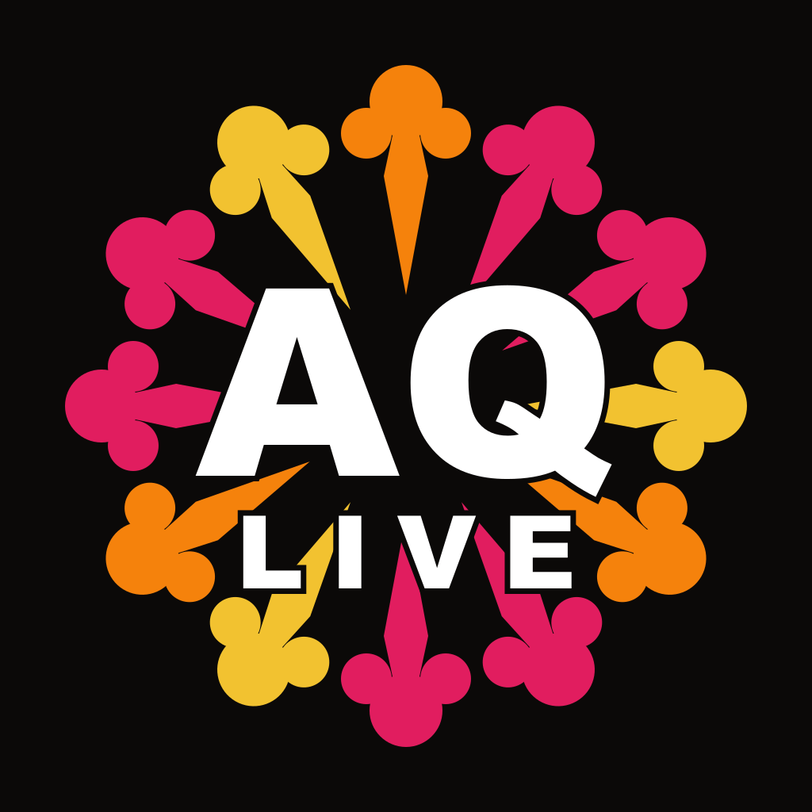

Tutti gli eventi dell'Aquila e provincia, in un'app. Gratuita, senza pubblicità.
Disponibile su Google Play e App Store, in 6 lingue (italiano, inglese, francese, spagnolo, tedesco e cinese).
L'Aquila è piena di vita: concerti, teatro, sagre, mostre, la Perdonanza. Ma quella vita era sparsa tra volantini, pagine social e passaparola, e troppe volte si scopriva un evento il giorno dopo. Mancava un posto dove trovarla tutta. L'AquiLive è quel posto: l'ho ideata e costruita per la mia città, e per chi la visita.
Dentro l'app c'è una sezione Sconti dedicata a bar, ristoranti, negozi ed esperienze del territorio, con offerte esclusive per chi usa l'app. Se vuoi che la tua attività ci sia, scrivimi: mirko.rocci@gmail.com.
L'AquiLive è all'inizio del suo viaggio: ogni critica costruttiva, segnalazione o idea è benvenuta. Potete scrivermi dalla chat dentro l'app o via email. È così che la faremo crescere, insieme.